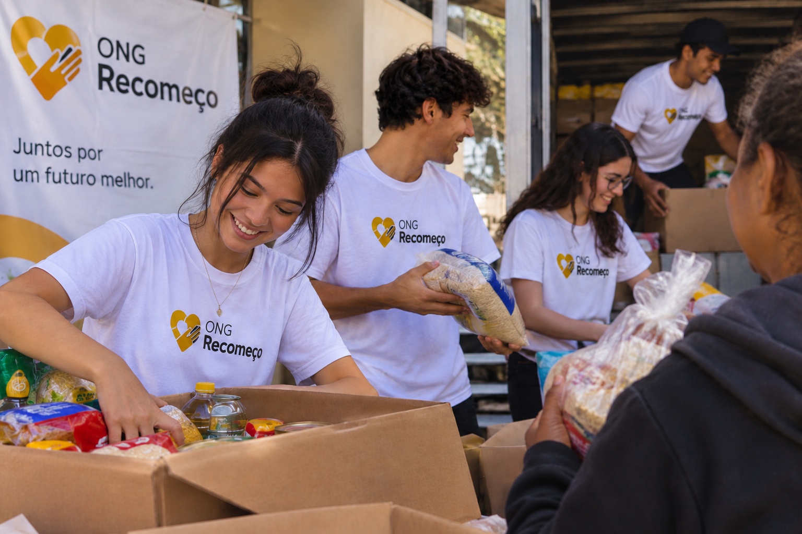
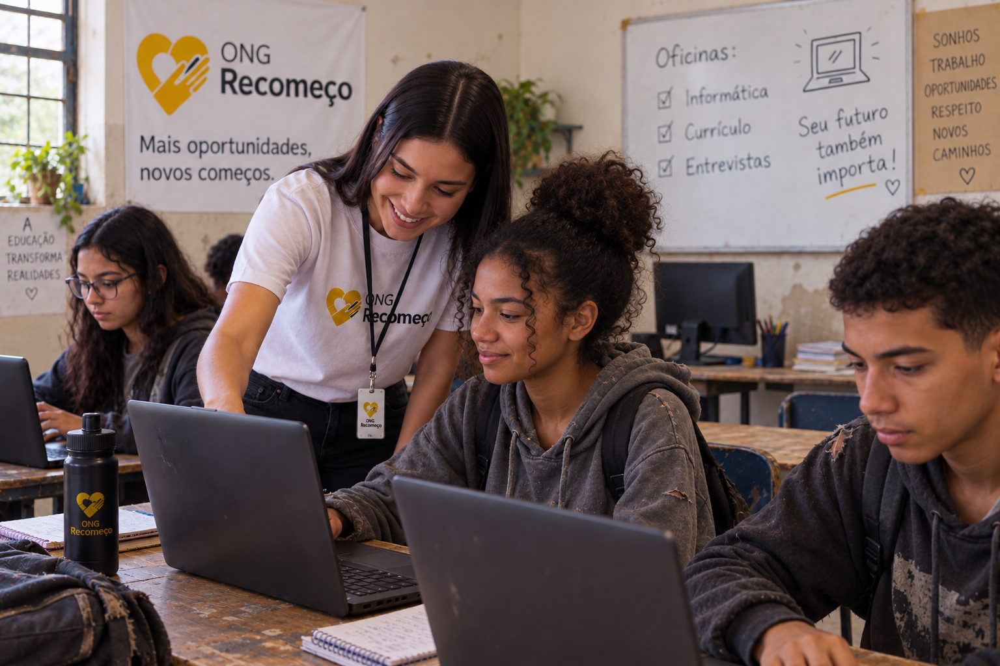
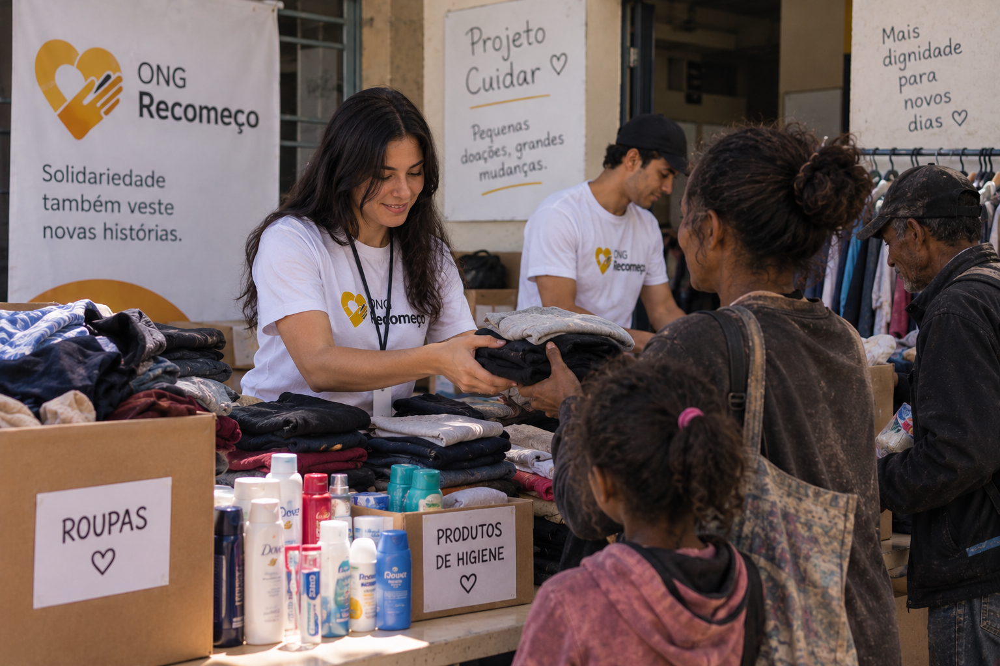
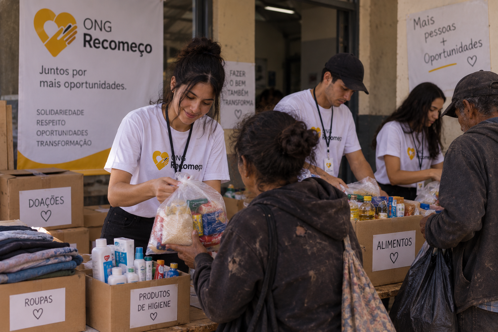

Nossos projetos
A ONG Recomeço desenvolve projetos voltados para a inclusão social, educação e apoio às pessoas em situação de vulnerabilidade.
Conheça nossos Projetos
Conheça os projetos desenvolvidos pela ONG Recomeço e veja como cada iniciativa contribui para melhorar a qualidade de vida das pessoas em situação de vulnerabilidade social.
Projeto Mesa Cheia
O Projeto Mesa Cheia tem como objetivo combater a fome e ajudar famílias que enfrentam dificuldades para ter acesso a uma alimentação adequada. Através de campanhas de arrecadação, a ONG Recomeço recebe alimentos doados pela comunidade e organiza sua distribuição para pessoas em situação de vulnerabilidade social.
Além da arrecadação de alimentos, o projeto busca incentivar a solidariedade e a participação da comunidade. Qualquer pessoa pode contribuir com doações e ajudar a levar alimentos para famílias que precisam.

Projeto Novo Caminho
O Projeto Novo Caminho foi criado para oferecer oportunidades de aprendizado e preparação para o mercado de trabalho. Através de oficinas gratuitas, os participantes podem aprender informática, desenvolver seus currículos e receber orientações para se preparar para entrevistas de emprego.
O projeto busca ajudar pessoas em situação de vulnerabilidade a desenvolver novas habilidades e aumentar suas oportunidades profissionais. Dessa forma, a ONG Recomeço contribui para a construção de um futuro com mais independência e novas possibilidades.

Projeto Cuidar
O Projeto Cuidar tem como objetivo arrecadar roupas, produtos de higiene e outros itens básicos para pessoas e famílias em situação de vulnerabilidade social. As doações recebidas são organizadas pela equipe da ONG e posteriormente distribuídas para aqueles que mais precisam.
Além de contribuir com necessidades básicas, o projeto busca proporcionar mais dignidade e bem-estar aos beneficiados. A comunidade pode participar através da doação de roupas em bom estado, produtos de higiene e outros itens que possam fazer a diferença na vida de quem precisa.

Projeto Voluntário
O Projeto Voluntário foi criado para pessoas que desejam contribuir com o trabalho da ONG Recomeço e participar das ações realizadas pela organização. Os voluntários podem ajudar na organização de campanhas, arrecadação de doações, distribuição de alimentos e outras atividades desenvolvidas pela ONG.
A participação dos voluntários é muito importante para que os projetos possam alcançar mais pessoas. Além de contribuir com a comunidade, os voluntários têm a oportunidade de compartilhar conhecimentos, desenvolver novas habilidades e fazer parte de ações que promovem solidariedade e transformação social.
